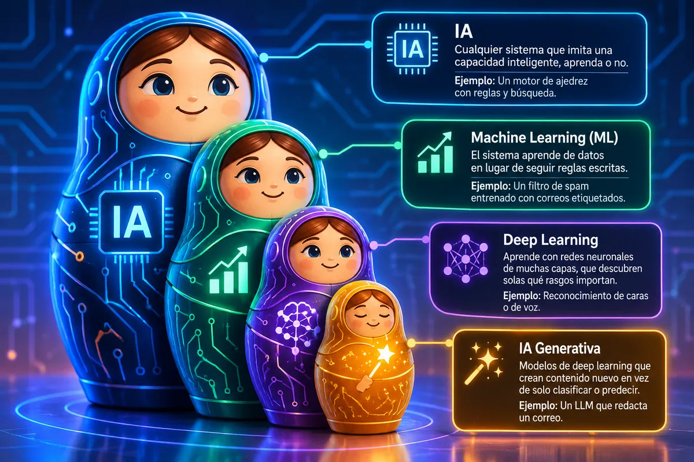

Qué es
La inteligencia artificial (IA) es el campo que construye sistemas capaces de hacer tareas que asociamos con la inteligencia humana: reconocer imágenes o voz, entender y escribir texto, decidir, planificar o predecir. No hay una única técnica detrás: es un paraguas que cubre desde reglas escritas a mano hasta los modelos que hoy generan texto.
La OCDE, cuya definición siguen muchas leyes, la describe en esencia como un sistema basado en máquinas que, a partir de lo que recibe, infiere cómo producir salidas (predicciones, contenido, recomendaciones o decisiones) que influyen en su entorno, con distintos grados de autonomía. La palabra clave es infiere: el sistema no se limita a ejecutar pasos fijos.
IA, ML, deep learning e IA generativa
Los cuatro términos se usan a menudo como sinónimos, pero son conjuntos anidados, cada uno dentro del anterior:
| Término | Qué añade | Ejemplo |
|---|---|---|
| IA | Cualquier sistema que imita una capacidad inteligente, aprenda o no. | Un motor de ajedrez clásico, con reglas y búsqueda. |
| ML | El sistema aprende de datos en lugar de seguir reglas escritas. | Un filtro de spam entrenado con correos etiquetados. |
| Deep learning | Aprende con redes neuronales de muchas capas, que descubren solas qué rasgos importan. | Reconocimiento de caras o de voz. |
| IA generativa | Modelos de deep learning que crean contenido nuevo en vez de solo clasificar o predecir. | Un LLM que redacta un correo. |

Por eso todo LLM es IA generativa, toda IA generativa es deep learning y todo deep learning es ML, pero no al revés. En el mapa estos temas aparecen como hermanos, para no esconderlos cinco niveles abajo; la relación real es la de esta tabla.
Dos grandes enfoques
- IA simbólica: el conocimiento se escribe a mano como reglas y hechos (sistemas expertos, motores de reglas). Es explicable y predecible, pero frágil ante casos que nadie previó y cara de mantener.
- IA basada en datos: el sistema aprende patrones a partir de ejemplos (el ML y todo lo que cuelga de él). Se adapta a casos nuevos, pero necesita datos, puede equivocarse con seguridad y explica peor sus decisiones.
Casi todo lo que hoy se llama IA pertenece al segundo grupo, aunque en sistemas reales conviven: un agente que usa un LLM suele estar rodeado de reglas escritas a mano que limitan lo que puede hacer.
IA estrecha e IA general
Todos los sistemas que existen hoy son IA estrecha (o débil): rinden bien en las tareas para las que se diseñaron o entrenaron, aunque los LLM cubran un abanico sorprendentemente amplio. La IA general (capaz de aprender y razonar en cualquier dominio como una persona) es un objetivo de investigación y un tema de debate, no un producto.
Caso real: Kopi Chess
Kopi Chess (código público) juega y analiza partidas de ajedrez, y tiene a la vez IA simbólica pura y un sistema híbrido. Todo motor de ajedrez tiene dos piezas: una búsqueda, que explora el árbol de jugadas posibles («si yo juego esto, él puede responder aquello…»), y una evaluación, que dice lo buena que es una posición sin seguir jugando, en centésimas de peón.
- Los bots flojos son IA simbólica pura.
PAWNelige una jugada legal al azar, con más peso para capturas, jaques y coronaciones, según una tabla de pesos escrita a mano.KNIGHTmira dos medias jugadas por delante (la suya y la respuesta del rival) con alfa-beta (una búsqueda que descarta las ramas que ya no pueden mejorar el resultado) y evalúa con reglas que también están en el código: el material más unos puntos por casilla (los caballos quieren el centro, el rey quiere estar enrocado…). Nada se ha aprendido de datos: cada decisión sale de una regla que alguien puede leer y cambiar. - Los bots fuertes y el análisis usan Stockfish 19, que es híbrido. Su búsqueda sigue siendo
simbólica: las reglas del ajedrez y una búsqueda alfa-beta mucho más profunda y afinada que la de
KNIGHT. Pero su evaluación es aprendida: desde la versión 12 (2020) usa una red neuronal llamada NNUE, entrenada con miles de millones de posiciones ya evaluadas, y desde la 16 (2023) ya no le queda evaluación escrita a mano. Es ML, aunque no el deep learning de la tabla: la red es pequeña y poco profunda a propósito, para evaluar millones de posiciones por segundo. - Encima vuelve a haber reglas. Kopi Chess habla con Stockfish por UCI y clasifica cada jugada con umbrales fijos sobre la probabilidad de ganar que se pierde: menos de 0,1 es buena, de 0,1 a 0,2 imprecisión, de 0,2 a 0,3 error y 0,3 o más error grave.
Así que a la pregunta «¿Stockfish es IA simbólica o basada en datos?» la respuesta es: las dos. Hasta 2020 era el ejemplo de manual de IA simbólica (el «motor de ajedrez clásico» de la tabla); hoy busca con reglas y evalúa con lo que aprendió de datos. El motor de ajedrez que sí es deep learning de principio a fin es Leela Chess Zero, heredero de AlphaZero: una red grande que aprendió jugando contra sí misma.
Errores frecuentes
- Llamar IA solo a los chatbots. Un sistema de recomendaciones, un detector de fraude o un corrector ortográfico también lo son.
- Usar IA, ML e IA generativa como sinónimos. Elegir bien el término ayuda a elegir bien la solución: para clasificar transacciones quizá baste un modelo de ML clásico, más barato y explicable que un LLM.
- Pensar que "aprende sola" en producción. La mayoría de modelos se entrenan una vez y luego solo infieren; no mejoran con el uso salvo que alguien los vuelva a entrenar.
Qué contiene
Evaluación
Preguntas originales escritas para estas fichas; no son preguntas reales de ningún examen.
Relacionados
Fuentes
- What is artificial intelligence (AI)? (IBM, consultada el 03/11/2026).
- Updates to the OECD’s definition of an AI system explained (OCDE, consultada el 03/11/2026).
Esta ficha tiene imágenes generadas con inteligencia artificial.